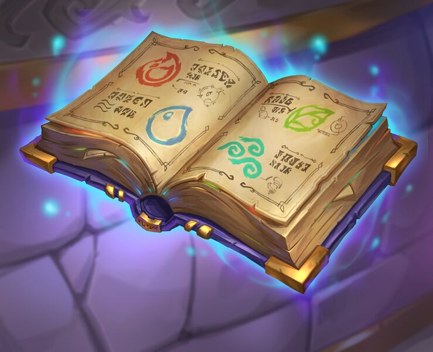

Feitiços
Abaffiato
Abaffiato é um feitiço relacionado à capacidade de audição.
Harry Potter encontrou este feitiço no livro de poções do Príncipe Mestiço.
A finalidade dele é produzir um zumbido no ouvido alheio, para impedir que esta pessoa escute o que é dito por alguém que está próximo.
Outra utilização do feitiço é em fechaduras de portas, para que a pessoa de um lado não escute nada do que for dito do outro.
Harry e Rony utilizaram esse feitiço para conversarem durante aulas de feitiços e em outras ocasiões na saga.
Accio
"Accio" é um feitiço Convocatório. É utilizado para atrair as coisas a um bruxo quando mencionada a palavra.
Aparece pela primeira vez nos filmes da saga quando a aluna Molly confisca Caramelos Incha-Língua do bolso de Jorge.
Harry teve dificuldades para aprender este feitiço, mas acabou por dominá-lo perfeitamente e usá-lo durante a Primeira Tarefa do Torneio Tribruxo para atrair sua vassoura Firebolt até a arena na qual estava sendo disputado o primeiro desafio de pegar o Ovo de Ouro do Rabo-Córneo Húngaro.
Não é todo objeto que é atraído pelo feitiço. Alguns deles possuem outros feitiços que os protegem, como é o caso das Horcruxes de Lord Voldemort, que não puderam ser facilmente encontradas apenas utilizando a convocação.
Aguamenti
O feitiço 'Aguamenti' produz uma fonte ou um jato de água diretamente da varinha do bruxo que o pronuncia.
Esta palavra mágica foi ensinada aos bruxos no sexto ano da aula de Feitiços.
Na série, Harry Potter tentou usar esse feitiço para conseguir água para Dumbledore na caverna da Horcrux, mas o feitiço estava bloquado de alguma forma, e a única maneira de se conseguir água era no lago de Inferi.
Outro exemplo deste feitiço foi quando Harry e Hagrid o evocaram para apagar o fogo da cabana do guarda caça depois da Batalha da Torre de Astronomia.
Estupefaço
O feitiço "estupefaço" é denominado de Estuporante e consiste em deixar uma pessoa inconsciente com um faixo vermelho de luz.
É um feitiço muito utilizado pelos Guardadores de Dragões, que tentam manter os animais sobre controle. Para paralisar os dragões é necessário que muitos Guardadores utilizem o feitiço ao mesmo tempo, mas é necessário um grande numero de Guardadores, pois a pele de dragão é muito resistente.
Foi usado pelos Bruxos do Ministério para tentar prender quem lançou a Marca Negra na Copa do Mundo de Quadribol, e Harry tentou impedir a fuga de Snape com este feitiço, quando o professor fugiu de Hogwarts no sexto ano.
Expectro Patronum
O Feitiço do Patrono, "Expectro Patronum", é um feitiço muito avançado na escolad e magia. Vários alunos têm muita dificuldade em executá-lo, pois está acinam do nível normal de bruxaria e é utilizado para se afastar Dementadores.
O feitiço conjura um patrono, guardião prateado fantasmagórico de forma animal que se interpõe entre a pessoa que o lança e o dementador. Funciona como um antidementador.
O patrono é um tipo de energia positiva, composto de felicidade, esperança, vontade de viver, do que o dementador se alimenta. Logo, quem o conjurou não consegue sentir desesperança, então o dementador não consegue afetá-lo.
Para executá-lo bem, o bruxo que o lança deve se concentrar em uma lembrança realmente feliz para alimentar o patrono de energia positiva.
O patrono de Harry Potter é um Cervo, o de Hermione é uma Lontra, o de Luna Lovegood é uma Lebre e o de Dumbledore é provavelmente uma Fênix.
Expelliarmus
Expelliarmus é um feitiço utilizado para desarmar um bruxo.
Quando evocado, ele retira a varinha ou qualquer outra arma ou ferramenta da mão do oponente. Um raio vermelho ofuscante é lançado quando este feitiço é usado.
Dependendo da força do feitiço, ele pode apenas retirar a varinha da mão do oponente ou lançá-la por metros de distância.
Geralmente é usado no mundo bruxo em duelos e combates e foi o primeiro feitiço treinado na Armada de Dumbledore.
Harry o utiliza contra o Lorde Voldemort.